Co nowego
Zmiany w ostatnich wersjach Pit Wall Crew.
Wersja 0.4.4.8 (15.11.2026)
POPRAWKAAssetto Corsa: mapka toru w raporcie z jazdy znów się pokazuje.
Wersja 0.4.4.7 (15.11.2026)
NOWERaport z jazdy, karta „Paliwo” / „Energia”: także najwięcej zużyte na jednym okrążeniu (przy energii też paliwo).

POPRAWKAPasek bez tekstu pod „Komunikaty” po pierwszym starcie nowej wersji.
Wersja 0.4.4.6 (15.11.2026)
POPRAWKAOkno nie zacina się już na chwilę przy sprawdzaniu aktualizacji po uruchomieniu.
POPRAWKAPolecenia postoju: „ciśnienie przód, o 2 w dół” z przecinkiem, poprawka w zdaniu („albo nie, lewe”) i „zatankuj do połowy”.
Wersja 0.4.4.5 (15.11.2026)
NOWEOkno: gładkie, zaokrąglone krawędzie kart, przycisków, plakietek i przełączników.

NOWEGłos z emocjami: dobre wiadomości (najlepsze okrążenie, zyskana pozycja, podium) żywiej, pilne komunikaty szybciej i głośniej.
POPRAWKAOkno: nie zacina się na chwilę przy uruchamianiu inżyniera.
POPRAWKARaport z jazdy: pozostałe karty (opony, energia, nagłówki, „Na następny stint”) też rysowane jako jeden element – raport ok. 3 razy lżejszy.
Wersja 0.4.4.4 (15.11.2026)
POPRAWKAOkno: szybszy start – strony pomocy budują się dopiero przy pierwszym otwarciu.
POPRAWKARaport z jazdy: lista zakrętów, „Popraw w jeździe” i kafelki rysowane jako jeden element – szybsze przewijanie, wybór raportu i zmiana rozmiaru okna.
Wersja 0.4.4.3 (15.11.2026)
POPRAWKAOkno: praca w oknie bez zacięć w pierwszych chwilach po starcie – raport z jazdy buduje się dopiero przy wejściu na jego stronę albo najechaniu na nią w menu.
Wersja 0.4.4.2 (14.11.2026)
POPRAWKAOkno: szybszy start – okno pokazuje się wcześniej i nie zacina się w pierwszych sekundach.
POPRAWKARaport z jazdy: płynne przewijanie, szybszy wybór raportu i zmiana rozmiaru okna.
POPRAWKA„Radio czek” działa jak „radio test”.
POPRAWKA„Coś zmienić?” i „Masz jakieś rady?” – inżynier mówi, co poprawić w jeździe.
POPRAWKA„Pit menu, opony bez zmian” ustawia pitstop bez zmiany opon.
Wersja 0.4.4.1 (14.11.2026)
POPRAWKAOkno: zmiana strony i rozmiaru bez przeskoków – strona i raport z jazdy pojawiają się od razu ułożone.
POPRAWKAPit wall: zabezpieczenie strony – dane z bazy zespołu i z linku dla obserwatorów są zawsze pokazywane jako tekst.
POPRAWKAPit wall: po „Odśwież” w „Okrążeniach” lista do porównania pokazuje nowe okrążenia.
POPRAWKAPit wall: po ponownym zalogowaniu do tego samego zespołu wraca widok zespołu zamiast ekranu logowania.
POPRAWKAPit wall: filtr sesji w „Okrążeniach” nie miesza okrążeń dwóch aut zespołu jadących naraz.
POPRAWKAPit wall: „Szybki plan” przy błędnych liczbach pokazuje komunikat zamiast zawieszać stronę.
Wersja 0.4.4.0 (13.11.2026)
NOWEWyjazd poza tor liczy się tylko ze skutkiem (kara gry, strata czasu, uderzenie); szerokie wyjścia bez kary raport z jazdy pokazuje osobno.
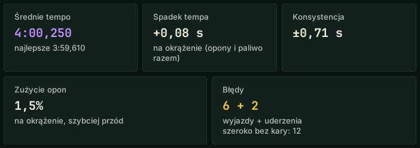
POPRAWKARada o oponach na pitstop nie zmienia się w trakcie stintu (było: „cztery opony”, a na zjeździe „bez opon”).
POPRAWKARada ciśnień na pitstop tylko z ustabilizowanych ciśnień; w Assetto Corsa w klikach gry.
POPRAWKA„Pobudka, nie śpij!” nie pada po pitstopie ani po uderzeniu, „Wróciłeś do rytmu” – dopiero gdy znane jest Twoje tempo.
POPRAWKAPytania rozpoznawane po całych słowach: „starczy?” to nie tarcze, „tempo spada” to nie pogoda.
POPRAWKA„Zmieniamy opony?” to pytanie, nie polecenie; „energia do pełna” ustawia menu boksu.
POPRAWKA„Czy zmienić opony na deszczowe?” odpowiada radą o deszczu, nie o zużyciu opon.
POPRAWKA„Przejadę 15 okrążeń na pełnym baku?” liczy też energię wirtualną.
POPRAWKARywale: odstęp, tempo i prognoza dojścia zgadzają się ze sobą; bez porównań z okrążeniem z pitstopem.
POPRAWKAPrędkość maksymalna rywali dopiero z pełnego okrążenia.
POPRAWKANajlepsze okrążenie to czas zaliczony przez grę – bez okrążeń skasowanych za limity toru (raport z jazdy i głos).
POPRAWKARaport z jazdy i podsumowanie wyścigu obejmują ostatnie okrążenie do mety.
POPRAWKARaport z jazdy: nic nie jest ucinane, także w wąskim oknie i przy powiększeniu ekranu; poprawne „Na pełnej energii … okr.”.
POPRAWKARaport z jazdy: „ABS” i „TC” wielkimi literami (było „Abs przez całe hamowanie”).
POPRAWKAPo pytaniu inżyniera („Pasuje?”) nic już nie jest dopowiadane.
POPRAWKAPolski głos: poprawne ułamki („kosztuje jedną i sześć dziesiątych sekundy”).
POPRAWKAOstatnie okrążenia wyścigu: poprawne odpowiedzi o strategii, zjeździe rywali, paliwie do mety i uszkodzeniach.
POPRAWKA„Jaka pogoda?”: „Tor stygnie, około trzech stopni na godzinę” zamiast „zmienia się o minus trzy stopni”.
POPRAWKADoradca pogody radzi zmianę opon także w sesji mokrej od początku.
POPRAWKANazwiska kierowców zawsze wielką literą.
POPRAWKAInne języki bez klucza Groq: przetłumaczone komunikaty o pitstopie, deszczu i zmęczeniu, rady do setupu, notatki i cały raport z jazdy.
POPRAWKAInne języki bez klucza Groq: komendy działają z każdym nazwiskiem.
POPRAWKAInne języki: notatki i uwagi o aucie zapisywane słowami kierowcy; numer zakrętu nie gubi reszty zdania.
POPRAWKAHiszpański: pit wall i radio zespołu nie wracają do polskiego.
POPRAWKAJednostki °F, mph, psi i galony: wszystkie liczby w zdaniu przeliczone (opony, ciśnienia, prędkość maksymalna, paliwo).
POPRAWKADemo: działa „cisza”, „gdzie jest Kowalski?” i „jakie mam notatki?”; płatne polecenia mówią, że są w pełnej wersji.
POPRAWKADemo: gwiazdki na liście komend zgodne z tym, co działa; raport z jazdy pokazuje zakręt z największą stratą.
POPRAWKADemo: o deszczu same fakty; kiedy zmienić opony – w pełnej wersji.
POPRAWKATryb Solo: polecenie powiadomienia mówi, że działa tylko w zespole.
POPRAWKAZamknięcie okna tuż po uruchomieniu nie wysyła już raportu awarii.
POPRAWKAPytanie z imieniem inżyniera („Jak sytuacja, Larry?”) rozumiane jak bez imienia, we wszystkich językach.
POPRAWKAInżynier odpowiada na powitanie („Cześć”).
POPRAWKAGdy Windows blokuje część programu („Inteligentna kontrola aplikacji”), okno mówi o tym wprost i podaje, co zrobić.
Wersja 0.4.3.44 (12.11.2026)
NOWEGłosowa instrukcja komend: „jakie są komendy o rywalach?”, „co mogę zapytać o opony?”, „dalej”.
NOWERywal zakręt po zakręcie bez nazwiska: „gdzie tracę do tego przede mną?”, „gdzie jest szybszy ten, który mnie goni?”.
NOWEUstawienia → Dźwięk i język: „Rozmiar tekstu” (100 / 110 / 125%) dla całego okna.
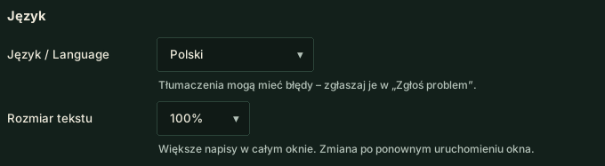
POPRAWKAPorównanie z rywalem: wyraźnie z nazwiskiem („Kowalski szybszy w T5…”), w każdym języku także bez klucza Groq.
POPRAWKA„Gdzie tracę do Kowalskiego?” porównuje z rywalem, nie z Twoim własnym okrążeniem.
POPRAWKA„Jak sytuacja?” i „co się dzieje?” – krótki stan zamiast braku odpowiedzi.
POPRAWKA„Możesz mówić” / „mów dalej” kończy też wyciszenie po „cisza”.
POPRAWKAPolski głos mówi „spoter”, nie „spater”.
POPRAWKAOkno: drobne napisy większe, szare teksty wyraźniejsze.
POPRAWKAOkno: elementy zakładki pojawiają się od razu po jej otwarciu.
POPRAWKACel „Tempo wyścigowe” oznaczony w oknie jako funkcja eksperymentalna.
What's new
Changes in the latest Pit Wall Crew versions.
Version 0.4.4.8 (15.11.2026)
FIXAssetto Corsa: the track map in the driving report shows again.
Version 0.4.4.7 (15.11.2026)
NEWDriving report, “Fuel” / “Energy” card: also the most used on a single lap (with energy, fuel too).

FIXBlank bar under “Messages” on the first start of a new version.
Version 0.4.4.6 (15.11.2026)
FIXThe window no longer freezes briefly while checking for updates at startup.
FIXPit commands: “front pressure, 2 down” with a comma, correcting yourself mid-sentence (“no wait, left”) and “refuel to half”.
Version 0.4.4.5 (15.11.2026)
NEWWindow: smooth, rounded edges on cards, buttons, badges and switches.
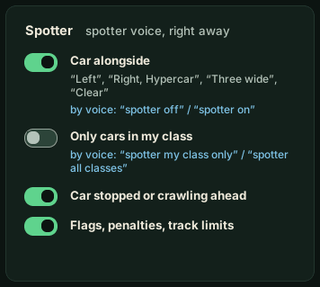
NEWVoice with emotion: good news (best lap, position gained, podium) sounds livelier, urgent calls faster and louder.
FIXWindow: no longer freezes for a moment when the engineer starts.
FIXDriving report: the remaining cards (tyres, energy, headers, “For the next stint”) also drawn as one element – the report is about 3 times lighter.
Version 0.4.4.4 (15.11.2026)
FIXWindow: faster start – help pages are built only when first opened.
FIXDriving report: corner list, “Improve in your driving” and tiles drawn as one element – faster scrolling, report selection and window resizing.
Version 0.4.4.3 (15.11.2026)
FIXWindow: no more stutters in the first moments after start – the driving report is built only when you open its page or point at it in the menu.
Version 0.4.4.2 (14.11.2026)
FIXWindow: faster start – the window appears sooner and no longer stutters in the first seconds.
FIXDriving report: smooth scrolling, faster report selection and window resizing.
FIXPolish commands: „Radio czek” works like „radio test”.
FIXPolish commands: „Coś zmienić?” and „Masz jakieś rady?” – the engineer says what to improve in your driving.
FIXPolish commands: „Pit menu, opony bez zmian” sets a pit stop without a tyre change.
Version 0.4.4.1 (14.11.2026)
FIXWindow: no more jumps when switching pages or resizing – a page and the driving report appear fully laid out.
FIXPit Wall: page hardening – data from the team database and the spectator link is always shown as plain text.
FIXPit Wall: after “Refresh” in “Laps”, the comparison list shows new laps.
FIXPit Wall: signing in again to the same team brings back the team view instead of the sign-in screen.
FIXPit Wall: the session filter in “Laps” no longer mixes laps of two team cars driving at once.
FIXPit Wall: “Quick plan” shows a message for wrong numbers instead of freezing the page.
Version 0.4.4.0 (13.11.2026)
NEWAn off-track only counts when it has a consequence (game penalty, lost time, impact); the driving report shows wide exits without a penalty separately.
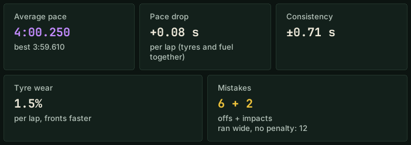
FIXPit stop tyre advice no longer changes during the stint (it said “four tyres”, then “no tyres” on pit entry).
FIXPit stop pressure advice only from stabilised pressures; in Assetto Corsa in the game's clicks.
FIX“Wake up!” no longer comes after a pit stop or an impact; “back in the rhythm” only once your pace is known.
FIXQuestions are matched by whole words – no more answers about the wrong topic.
FIX“Are we changing tyres?” is a question, not a command; “full energy” sets the pit menu.
FIX“Should we change to wets?” gets the rain advice, not the tyre wear answer.
FIX“Can I do 15 laps on a full tank?” also counts virtual energy.
FIXRivals: gap, pace and catch forecast agree with each other; no comparisons with a pit stop lap.
FIXRivals' top speed only from a full lap.
FIXThe best lap is a time the game counted – laps deleted for track limits are excluded (driving report and voice).
FIXThe driving report and race summary include the final lap to the flag.
FIXDriving report: nothing is cut off, also in a narrow window and with display scaling; correct “On full energy … laps”.
FIXDriving report: “ABS” and “TC” in capitals (it said “Abs through the whole braking”).
FIXAfter the engineer's question (“OK?”) nothing more is added.
FIXPolish voice: correct fractions.
FIXFinal laps of a race: correct answers about strategy, rivals' stops, fuel to the finish and damage.
FIX“What's the weather?”: “Track cooling, about 3 degrees per hour” instead of “changing by -3 degrees”.
FIXThe weather advisor recommends a tyre change also in a session that is wet from the start.
FIXDriver names always capitalised.
FIXOther languages without a Groq key: pit stop, rain and fatigue messages, setup advice, notes and the whole driving report are translated.
FIXOther languages without a Groq key: commands work with any driver name.
FIXOther languages: notes and car feedback are saved in the driver's own words; a corner number no longer drops the rest of the sentence.
FIXSpanish: the Pit Wall and team radio no longer fall back to Polish.
FIXUnits °F, mph, psi and gallons: every number in a sentence is converted (tyres, pressures, top speed, fuel).
FIXDemo: “quiet”, “where is Smith?” and “what are my notes?” work; paid commands say they are in the full version.
FIXDemo: stars in the command list match what works; the driving report shows the corner with the biggest loss.
FIXDemo: only facts about the rain; when to change tyres is in the full version.
FIXSolo mode: the notification command says it only works in a team.
FIXClosing the window right after launch no longer sends a crash report.
FIXA question with the engineer's name (“What's going on, Larry?”) is understood like without the name, in every language.
FIXThe engineer answers a greeting (“Hello”).
FIXWhen Windows blocks part of the program (“Smart App Control”), the window says so plainly and tells you what to do.
Version 0.4.3.44 (12.11.2026)
NEWVoice guide to commands: “what are the commands about rivals?”, “what can I ask about tyres?”, “more”.
NEWRival corner by corner without a name: “where am I losing to the car ahead?”, “where is the car behind faster?”.
NEWSettings → Sound and language: “Text size” (100 / 110 / 125%) for the whole window.
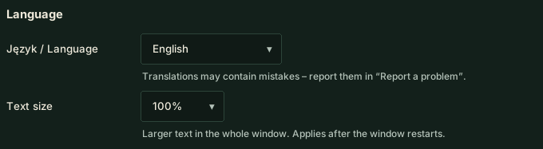
FIXRival comparison: clearly with the name (“Smith is faster in T5…”), in every language, also without a Groq key.
FIX“Where do I lose to Smith?” compares with the rival, not with your own lap.
FIX“What's the situation?” and “what's going on?” – a quick status instead of no answer.
FIX“You can talk” / “carry on” also ends the mute after “quiet”.
FIXThe Polish voice says “spotter” correctly.
FIXWindow: small text is larger, grey text is clearer.
FIXWindow: a tab's content appears right after you open it.
FIXThe “Race pace” goal is marked in the window as an experimental feature.
Was ist neu
Änderungen in den letzten Versionen von Pit Wall Crew.
Version 0.4.4.8 (15.11.2026)
KORREKTURAssetto Corsa: Die Streckenkarte im Fahrbericht wird wieder angezeigt.
Version 0.4.4.7 (15.11.2026)
NEUFahrbericht, Karte „Kraftstoff“ / „Energie“: auch der höchste Verbrauch auf einer Runde (bei Energie auch Kraftstoff).
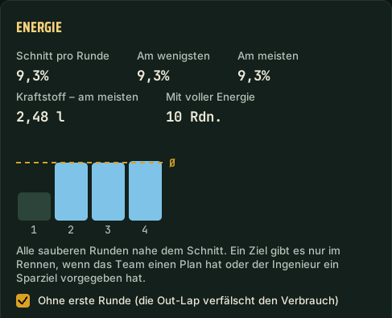
KORREKTURLeerer Balken unter „Meldungen“ beim ersten Start einer neuen Version.
Version 0.4.4.6 (15.11.2026)
KORREKTURDas Fenster hängt beim Prüfen auf Updates nach dem Start nicht mehr kurz.
KORREKTURBoxenbefehle: „Druck vorne, 2 runter“ mit Komma, Korrektur im Satz („ich meine links“) und „bis zur Hälfte tanken“.
Version 0.4.4.5 (15.11.2026)
NEUFenster: glatte, abgerundete Kanten bei Karten, Schaltflächen, Plaketten und Schaltern.

NEUStimme mit Emotion: gute Nachrichten (beste Runde, gewonnene Position, Podium) lebhafter, dringende Meldungen schneller und lauter.
KORREKTURFenster: friert beim Start des Ingenieurs nicht mehr kurz ein.
KORREKTURFahrbericht: auch die übrigen Karten (Reifen, Energie, Überschriften, „Für den nächsten Stint“) als ein Element gezeichnet – der Bericht ist etwa 3-mal leichter.
Version 0.4.4.4 (15.11.2026)
KORREKTURFenster: schnellerer Start – Hilfeseiten werden erst beim ersten Öffnen aufgebaut.
KORREKTURFahrbericht: Kurvenliste, „Beim Fahren verbessern“ und Kacheln als ein Element gezeichnet – schnelleres Scrollen, Berichtsauswahl und Ändern der Fenstergröße.
Version 0.4.4.3 (15.11.2026)
KORREKTURFenster: keine Ruckler mehr in den ersten Momenten nach dem Start – der Fahrbericht wird erst aufgebaut, wenn du seine Seite öffnest oder im Menü darauf zeigst.
Version 0.4.4.2 (14.11.2026)
KORREKTURFenster: schnellerer Start – das Fenster erscheint früher und ruckelt in den ersten Sekunden nicht mehr.
KORREKTURFahrbericht: flüssiges Scrollen, schnellere Auswahl des Berichts und Änderung der Fenstergröße.
KORREKTURPolnische Befehle: „Radio czek“ funktioniert wie „radio test“.
KORREKTURPolnische Befehle: „Coś zmienić?“ und „Masz jakieś rady?“ – der Ingenieur sagt, was du beim Fahren verbessern kannst.
KORREKTURPolnische Befehle: „Pit menu, opony bez zmian“ stellt einen Boxenstopp ohne Reifenwechsel ein.
Version 0.4.4.1 (14.11.2026)
KORREKTURFenster: keine Sprünge mehr beim Seitenwechsel und beim Ändern der Größe – Seite und Fahrbericht erscheinen fertig angeordnet.
KORREKTURPit Wall: Seite abgesichert – Daten aus der Team-Datenbank und vom Zuschauer-Link werden immer als reiner Text angezeigt.
KORREKTURPit Wall: nach „Aktualisieren“ in „Runden“ zeigt die Vergleichsliste neue Runden.
KORREKTURPit Wall: nach erneutem Anmelden im selben Team erscheint wieder die Teamansicht statt des Anmeldebildschirms.
KORREKTURPit Wall: der Session-Filter in „Runden“ mischt keine Runden zweier gleichzeitig fahrender Teamautos mehr.
KORREKTURPit Wall: „Schnellplan“ zeigt bei falschen Zahlen eine Meldung, statt die Seite einzufrieren.
Version 0.4.4.0 (13.11.2026)
NEUEin Ausritt zählt nur mit Folgen (Strafe des Spiels, Zeitverlust, Einschlag); weit rausgetragen ohne Strafe zeigt der Fahrbericht getrennt.
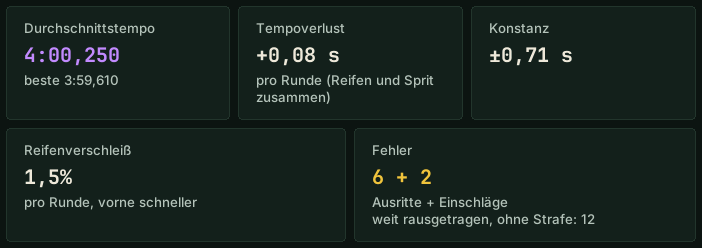
KORREKTURDer Reifentipp für den Boxenstopp ändert sich nicht mehr während des Stints (erst „vier Reifen“, bei der Einfahrt „keine Reifen“).
KORREKTURDrucktipp für den Boxenstopp nur aus stabilisierten Drücken; in Assetto Corsa in Klicks des Spiels.
KORREKTUR„Aufwachen!“ kommt nicht mehr nach einem Boxenstopp oder Einschlag; „wieder im Rhythmus“ erst, wenn dein Tempo bekannt ist.
KORREKTURFragen werden nach ganzen Wörtern erkannt – keine Antworten mehr zum falschen Thema.
KORREKTUR„Reifenwechsel?“ ist eine Frage, kein Befehl; „Energie voll“ stellt das Boxenmenü ein.
KORREKTUR„Sollen wir auf Regenreifen wechseln?“ bekommt den Rat zum Regen, nicht zum Reifenverschleiß.
KORREKTUR„Schaffe ich 15 Runden mit vollem Tank?“ rechnet auch mit der virtuellen Energie.
KORREKTURGegner: Abstand, Tempo und Prognose passen zusammen; keine Vergleiche mit einer Boxenstopp-Runde.
KORREKTURHöchstgeschwindigkeit der Gegner erst aus einer vollen Runde.
KORREKTURDie beste Runde ist eine vom Spiel gewertete Zeit – ohne wegen Streckenlimits gestrichene Runden (Fahrbericht und Stimme).
KORREKTURFahrbericht und Rennzusammenfassung enthalten die letzte Runde bis ins Ziel.
KORREKTURFahrbericht: nichts wird abgeschnitten, auch im schmalen Fenster und bei Bildschirmskalierung; richtige Angabe „Mit voller Energie … Rdn.“.
KORREKTURFahrbericht: „ABS“ und „TC“ in Großbuchstaben, Substantive in den Tipps wieder großgeschrieben.
KORREKTURNach einer Frage des Ingenieurs („Passt das?“) wird nichts mehr angehängt.
KORREKTURPolnische Stimme: korrekte Brüche.
KORREKTURLetzte Runden eines Rennens: richtige Antworten zu Strategie, Stopps der Gegner, Kraftstoff bis ins Ziel und Schäden.
KORREKTUR„Wetter?“: „Die Strecke kühlt ab, etwa 3 Grad pro Stunde“ statt „ändert sich um -3 Grad“.
KORREKTURDer Wetterberater empfiehlt den Reifenwechsel auch in einer von Beginn an nassen Session.
KORREKTURFahrernamen immer großgeschrieben.
KORREKTURAndere Sprachen ohne Groq-Schlüssel: Meldungen zu Boxenstopp, Regen und Müdigkeit, Setup-Tipps, Notizen und der ganze Fahrbericht sind übersetzt.
KORREKTURAndere Sprachen ohne Groq-Schlüssel: Befehle funktionieren mit jedem Fahrernamen.
KORREKTURAndere Sprachen: Notizen und Rückmeldungen zum Auto werden in den Worten des Fahrers gespeichert; eine Kurvennummer verschluckt nicht mehr den Rest des Satzes.
KORREKTURSpanisch: Pit Wall und Teamfunk fallen nicht mehr ins Polnische zurück.
KORREKTUREinheiten °F, mph, psi und Gallonen: jede Zahl im Satz wird umgerechnet (Reifen, Drücke, Höchstgeschwindigkeit, Kraftstoff).
KORREKTURDemo: „Ruhe“, „wo ist Müller?“ und „welche Notizen habe ich?“ funktionieren; kostenpflichtige Befehle sagen, dass sie in der Vollversion sind.
KORREKTURDemo: Sterne in der Befehlsliste passen zu dem, was funktioniert; der Fahrbericht zeigt die Kurve mit dem größten Verlust.
KORREKTURDemo: zum Regen nur Fakten; wann die Reifen gewechselt werden, sagt die Vollversion.
KORREKTURSolo-Modus: Der Benachrichtigungsbefehl sagt, dass er nur im Team funktioniert.
KORREKTURDas Schließen des Fensters direkt nach dem Start sendet keinen Absturzbericht mehr.
KORREKTUREine Frage mit dem Namen des Ingenieurs („Was ist los, Larry?“) wird wie ohne Namen verstanden, in allen Sprachen.
KORREKTURDer Ingenieur antwortet auf eine Begrüßung („Hallo“).
KORREKTURWenn Windows einen Teil des Programms blockiert („Smart App Control“), sagt das Fenster es klar und was zu tun ist.
Version 0.4.3.44 (12.11.2026)
NEUSprach-Anleitung zu Befehlen: „welche Befehle gibt es zu Gegnern?“, „was kann ich zu Reifen fragen?“, „weiter“.
NEUGegner Kurve für Kurve ohne Namen: „wo verliere ich auf den vor mir?“, „wo ist der hinter mir schneller?“.
NEUEinstellungen → Ton und Sprache: „Textgröße“ (100 / 110 / 125 %) für das ganze Fenster.
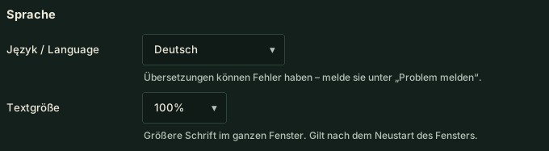
KORREKTURVergleich mit dem Gegner: klar mit Namen („Müller ist schneller in T5…“), in jeder Sprache auch ohne Groq-Schlüssel.
KORREKTUR„Wo verliere ich auf Müller?“ vergleicht mit dem Gegner, nicht mit deiner eigenen Runde.
KORREKTUR„Wie ist die Lage?“ und „was ist los?“ – kurzer Stand statt keiner Antwort.
KORREKTUR„Du kannst reden“ / „rede weiter“ beendet auch die Stummschaltung nach „Ruhe“.
KORREKTURDie polnische Stimme spricht „Spotter“ richtig aus.
KORREKTURFenster: kleine Schrift größer, graue Texte deutlicher.
KORREKTURFenster: Der Inhalt eines Tabs erscheint sofort nach dem Öffnen.
KORREKTURDas Ziel „Renntempo“ ist im Fenster als experimentelle Funktion gekennzeichnet.
Nouveautés
Changements des dernières versions de Pit Wall Crew.
Version 0.4.4.8 (15.11.2026)
CORRECTIONAssetto Corsa : la carte du circuit s'affiche à nouveau dans le rapport de conduite.
Version 0.4.4.7 (15.11.2026)
NOUVEAURapport de conduite, carte « Carburant » / « Énergie » : aussi le maximum utilisé sur un tour (avec l'énergie, le carburant aussi).

CORRECTIONBarre vide sous « Messages » au premier lancement d'une nouvelle version.
Version 0.4.4.6 (15.11.2026)
CORRECTIONLa fenêtre ne se fige plus un instant pendant la recherche de mises à jour au démarrage.
CORRECTIONCommandes d'arrêt : « pression avant, 2 en moins » avec virgule, correction en cours de phrase (« non, gauches ») et « plein à moitié ».
Version 0.4.4.5 (15.11.2026)
NOUVEAUFenêtre : bords lisses et arrondis pour les cartes, boutons, badges et interrupteurs.

NOUVEAUVoix avec émotion : bonnes nouvelles (meilleur tour, place gagnée, podium) plus vivantes, messages urgents plus rapides et plus forts.
CORRECTIONFenêtre : ne se fige plus un instant au démarrage de l'ingénieur.
CORRECTIONRapport de conduite : les autres cartes (pneus, énergie, en-têtes, « Pour le prochain relais ») aussi dessinées en un seul élément – rapport environ 3 fois plus léger.
Version 0.4.4.4 (15.11.2026)
CORRECTIONFenêtre : démarrage plus rapide – les pages d’aide ne sont construites qu’à la première ouverture.
CORRECTIONRapport de conduite : liste des virages, « À améliorer au pilotage » et tuiles dessinés en un seul élément – défilement, choix du rapport et redimensionnement plus rapides.
Version 0.4.4.3 (15.11.2026)
CORRECTIONFenêtre : plus de saccades dans les premiers instants après le démarrage – le rapport de conduite n’est construit qu’à l’ouverture de sa page ou au survol de son entrée dans le menu.
Version 0.4.4.2 (14.11.2026)
CORRECTIONFenêtre : démarrage plus rapide – la fenêtre s'affiche plus tôt et ne saccade plus pendant les premières secondes.
CORRECTIONRapport de conduite : défilement fluide, choix du rapport et redimensionnement de la fenêtre plus rapides.
CORRECTIONCommandes en polonais : « Radio czek » fonctionne comme « radio test ».
CORRECTIONCommandes en polonais : « Coś zmienić? » et « Masz jakieś rady? » – l'ingénieur dit quoi améliorer dans ta conduite.
CORRECTIONCommandes en polonais : « Pit menu, opony bez zmian » règle un arrêt sans changement de pneus.
Version 0.4.4.1 (14.11.2026)
CORRECTIONFenêtre : plus de sauts au changement de page ou de taille – la page et le rapport de conduite s'affichent déjà mis en page.
CORRECTIONPit Wall : page sécurisée – les données de la base de l'équipe et du lien spectateurs s'affichent toujours comme du texte.
CORRECTIONPit Wall : après « Actualiser » dans « Tours », la liste de comparaison affiche les nouveaux tours.
CORRECTIONPit Wall : après une nouvelle connexion à la même équipe, la vue de l'équipe revient au lieu de l'écran de connexion.
CORRECTIONPit Wall : le filtre de session dans « Tours » ne mélange plus les tours de deux voitures de l'équipe roulant en même temps.
CORRECTIONPit Wall : « Plan rapide » affiche un message en cas de nombres erronés au lieu de bloquer la page.
Version 0.4.4.0 (13.11.2026)
NOUVEAUUne sortie de piste ne compte qu'avec une conséquence (pénalité du jeu, temps perdu, choc) ; le rapport de conduite indique à part les passages au large sans pénalité.
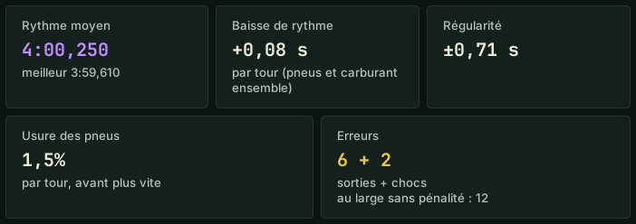
CORRECTIONLe conseil pneus pour l'arrêt ne change plus pendant le relais (c'était « quatre pneus », puis « sans pneus » à l'entrée des stands).
CORRECTIONConseil de pressions pour l'arrêt seulement à partir de pressions stabilisées ; dans Assetto Corsa en crans du jeu.
CORRECTION« Réveille-toi ! » ne tombe plus après un arrêt ou un choc ; « tu as retrouvé le rythme » seulement quand ton rythme est connu.
CORRECTIONLes questions sont reconnues par mots entiers – plus de réponses sur le mauvais sujet.
CORRECTION« On change les pneus ? » est une question, pas une commande ; « énergie au plein » règle le menu des stands.
CORRECTION« Faut-il passer aux pneus pluie ? » reçoit le conseil sur la pluie, pas sur l'usure des pneus.
CORRECTION« Je peux faire 15 tours avec le plein ? » compte aussi l'énergie virtuelle.
CORRECTIONRivaux : écart, rythme et prévision de jonction concordent ; pas de comparaison avec un tour d'arrêt.
CORRECTIONVitesse maximale des rivaux seulement à partir d'un tour complet.
CORRECTIONLe meilleur tour est un temps validé par le jeu – sans les tours annulés pour limites de piste (rapport de conduite et voix).
CORRECTIONLe rapport de conduite et le résumé de course incluent le dernier tour jusqu'à l'arrivée.
CORRECTIONRapport de conduite : rien n'est coupé, même dans une fenêtre étroite ou avec la mise à l'échelle de l'écran ; « Avec l'énergie pleine … tours » correct.
CORRECTIONRapport de conduite : « ABS » et « TC » en majuscules (c'était « Abs pendant tout le freinage »).
CORRECTIONAprès une question de l'ingénieur (« Ça te va ? »), plus rien n'est ajouté.
CORRECTIONVoix polonaise : fractions correctes.
CORRECTIONDerniers tours de course : réponses correctes sur la stratégie, les arrêts des rivaux, le carburant jusqu'à l'arrivée et les dégâts.
CORRECTION« Météo ? » : « La piste refroidit, environ 3 degrés par heure » au lieu de « change de -3 degrés ».
CORRECTIONLe conseiller météo recommande le changement de pneus aussi dans une session mouillée dès le départ.
CORRECTIONNoms des pilotes toujours avec une majuscule.
CORRECTIONAutres langues sans clé Groq : messages sur l'arrêt, la pluie et la fatigue, conseils de réglage, notes et tout le rapport de conduite sont traduits.
CORRECTIONAutres langues sans clé Groq : les commandes fonctionnent avec n'importe quel nom de pilote.
CORRECTIONAutres langues : notes et remarques sur la voiture enregistrées avec les mots du pilote ; un numéro de virage ne fait plus perdre le reste de la phrase.
CORRECTIONEspagnol : le Pit Wall et la radio d'équipe ne repassent plus au polonais.
CORRECTIONUnités °F, mph, psi et gallons : tous les nombres d'une phrase sont convertis (pneus, pressions, vitesse maximale, carburant).
CORRECTIONDémo : « silence », « où est Dupont ? » et « quelles sont mes notes ? » fonctionnent ; les commandes payantes disent qu'elles sont dans la version complète.
CORRECTIONDémo : les étoiles de la liste des commandes correspondent à ce qui fonctionne ; le rapport de conduite montre le virage avec la plus grosse perte.
CORRECTIONDémo : seulement les faits sur la pluie ; quand changer de pneus, c'est dans la version complète.
CORRECTIONMode Solo : la commande de notification dit qu'elle ne fonctionne qu'en équipe.
CORRECTIONFermer la fenêtre juste après le lancement n'envoie plus de rapport de plantage.
CORRECTIONUne question avec le prénom de l'ingénieur (« Qu'est-ce qui se passe, Larry ? ») est comprise comme sans prénom, dans toutes les langues.
CORRECTIONL'ingénieur répond à un salut (« Salut »).
CORRECTIONQuand Windows bloque une partie du programme (« Contrôle intelligent des applications »), la fenêtre le dit clairement et indique quoi faire.
Version 0.4.3.44 (12.11.2026)
NOUVEAUGuide vocal des commandes : « quelles sont les commandes sur les rivaux ? », « que puis-je demander sur les pneus ? », « suite ».
NOUVEAURival virage par virage sans nom : « où je perds sur celui de devant ? », « où celui de derrière est plus rapide ? ».
NOUVEAURéglages → Son et langue : « Taille du texte » (100 / 110 / 125 %) pour toute la fenêtre.
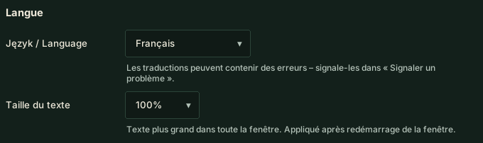
CORRECTIONComparaison avec un rival : clairement avec le nom (« Dupont est plus rapide en T5… »), dans chaque langue, même sans clé Groq.
CORRECTION« Où je perds sur Dupont ? » compare avec le rival, pas avec ton propre tour.
CORRECTION« Quelle est la situation ? » et « qu'est-ce qui se passe ? » – un état rapide au lieu d'aucune réponse.
CORRECTION« Tu peux parler » / « continue » met aussi fin au silence après « silence ».
CORRECTIONLa voix polonaise prononce « spotter » correctement.
CORRECTIONFenêtre : petits textes plus grands, textes gris plus nets.
CORRECTIONFenêtre : le contenu d'un onglet apparaît dès son ouverture.
CORRECTIONL'objectif « Rythme de course » est signalé dans la fenêtre comme fonction expérimentale.
Novedades
Cambios en las últimas versiones de Pit Wall Crew.
Versión 0.4.4.8 (15.11.2026)
CORRECCIÓNAssetto Corsa: el mapa del circuito vuelve a verse en el informe de conducción.
Versión 0.4.4.7 (15.11.2026)
NUEVOInforme de conducción, tarjeta «Combustible» / «Energía»: también lo máximo gastado en una vuelta (con energía, también el combustible).

CORRECCIÓNBarra vacía bajo «Mensajes» en el primer inicio de una versión nueva.
Versión 0.4.4.6 (15.11.2026)
CORRECCIÓNLa ventana ya no se congela un momento al buscar actualizaciones al iniciar.
CORRECCIÓNÓrdenes de parada: «presión delante, 2 abajo» con coma, corregirse en la frase («no, izquierdos») y «reposta hasta la mitad».
Versión 0.4.4.5 (15.11.2026)
NUEVOVentana: bordes suaves y redondeados en tarjetas, botones, etiquetas e interruptores.
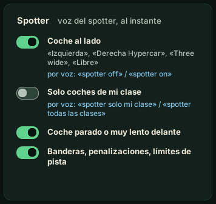
NUEVOVoz con emoción: buenas noticias (mejor vuelta, posición ganada, podio) más animadas, avisos urgentes más rápidos y fuertes.
CORRECCIÓNVentana: ya no se congela un momento al iniciar el ingeniero.
CORRECCIÓNInforme de conducción: las demás tarjetas (neumáticos, energía, encabezados, «Para el próximo stint») también dibujadas como un solo elemento – el informe es unas 3 veces más ligero.
Versión 0.4.4.4 (15.11.2026)
CORRECCIÓNVentana: arranque más rápido – las páginas de ayuda se crean solo al abrirlas por primera vez.
CORRECCIÓNInforme de conducción: lista de curvas, «Mejora en la conducción» y mosaicos dibujados como un solo elemento – desplazamiento, elección del informe y cambio de tamaño más rápidos.
Versión 0.4.4.3 (15.11.2026)
CORRECCIÓNVentana: sin tirones en los primeros momentos tras el arranque – el informe de conducción se crea solo al abrir su página o al pasar el ratón por ella en el menú.
Versión 0.4.4.2 (14.11.2026)
CORRECCIÓNVentana: inicio más rápido – la ventana aparece antes y ya no da tirones en los primeros segundos.
CORRECCIÓNInforme de conducción: desplazamiento fluido, elección del informe y cambio de tamaño de la ventana más rápidos.
CORRECCIÓNÓrdenes en polaco: «Radio czek» funciona como «radio test».
CORRECCIÓNÓrdenes en polaco: «Coś zmienić?» y «Masz jakieś rady?» – el ingeniero dice qué mejorar en tu conducción.
CORRECCIÓNÓrdenes en polaco: «Pit menu, opony bez zmian» ajusta una parada sin cambio de neumáticos.
Versión 0.4.4.1 (14.11.2026)
CORRECCIÓNVentana: sin saltos al cambiar de página o de tamaño – la página y el informe de conducción aparecen ya colocados.
CORRECCIÓNPit Wall: página protegida – los datos de la base del equipo y del enlace de espectador se muestran siempre como texto.
CORRECCIÓNPit Wall: tras «Actualizar» en «Vueltas», la lista de comparación muestra las vueltas nuevas.
CORRECCIÓNPit Wall: al volver a iniciar sesión en el mismo equipo vuelve la vista del equipo en lugar de la pantalla de inicio de sesión.
CORRECCIÓNPit Wall: el filtro de sesión en «Vueltas» ya no mezcla vueltas de dos coches del equipo que ruedan a la vez.
CORRECCIÓNPit Wall: «Plan rápido» muestra un mensaje con números erróneos en lugar de bloquear la página.
Versión 0.4.4.0 (13.11.2026)
NUEVOUna salida de pista solo cuenta si tiene consecuencias (penalización del juego, tiempo perdido, golpe); el informe de conducción muestra aparte las salidas anchas sin penalización.
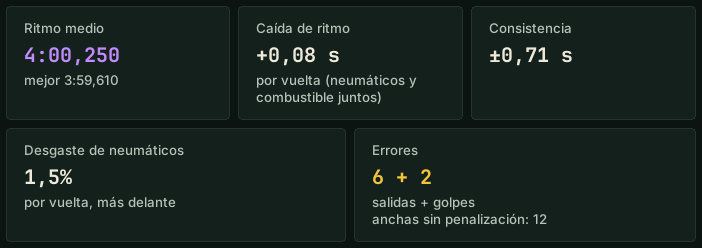
CORRECCIÓNEl consejo de neumáticos para la parada ya no cambia durante el stint (decía «cuatro neumáticos» y, al entrar, «sin neumáticos»).
CORRECCIÓNConsejo de presiones para la parada solo con presiones estabilizadas; en Assetto Corsa en clics del juego.
CORRECCIÓN«¡Despierta!» ya no suena tras una parada o un golpe; «has vuelto al ritmo» solo cuando se conoce tu ritmo.
CORRECCIÓNLas preguntas se reconocen por palabras completas: se acabaron las respuestas sobre otro tema.
CORRECCIÓN«¿Cambiamos neumáticos?» es una pregunta, no una orden; «energía al máximo» ajusta el menú de boxes.
CORRECCIÓN«¿Cambiamos a neumáticos de lluvia?» recibe el consejo sobre la lluvia, no sobre el desgaste.
CORRECCIÓN«¿Hago 15 vueltas con el depósito lleno?» también cuenta la energía virtual.
CORRECCIÓNRivales: distancia, ritmo y previsión de alcance coinciden; sin comparaciones con una vuelta de parada.
CORRECCIÓNVelocidad máxima de los rivales solo a partir de una vuelta completa.
CORRECCIÓNLa mejor vuelta es un tiempo validado por el juego: sin vueltas anuladas por límites de pista (informe de conducción y voz).
CORRECCIÓNEl informe de conducción y el resumen de carrera incluyen la última vuelta hasta la meta.
CORRECCIÓNInforme de conducción: nada se corta, tampoco en una ventana estrecha ni con el escalado de pantalla; «Con energía completa … vueltas» correcto.
CORRECCIÓNInforme de conducción: «ABS» y «TC» en mayúsculas (decía «Abs durante toda la frenada»).
CORRECCIÓNTras una pregunta del ingeniero («¿Vale?») ya no se añade nada más.
CORRECCIÓNVoz polaca: fracciones correctas.
CORRECCIÓNÚltimas vueltas de carrera: respuestas correctas sobre estrategia, paradas de los rivales, combustible hasta meta y daños.
CORRECCIÓN«¿Qué tiempo hace?»: «La pista se enfría, unos 3 grados por hora» en vez de «cambia -3 grados».
CORRECCIÓNEl asesor del tiempo aconseja el cambio de neumáticos también en una sesión mojada desde el inicio.
CORRECCIÓNNombres de pilotos siempre con mayúscula.
CORRECCIÓNOtros idiomas sin clave Groq: mensajes de parada, lluvia y cansancio, consejos de reglaje, notas y todo el informe de conducción están traducidos.
CORRECCIÓNOtros idiomas sin clave Groq: los comandos funcionan con cualquier nombre de piloto.
CORRECCIÓNOtros idiomas: las notas y comentarios sobre el coche se guardan con las palabras del piloto; un número de curva ya no hace perder el resto de la frase.
CORRECCIÓNEspañol: el Pit Wall y la radio del equipo ya no vuelven al polaco.
CORRECCIÓNUnidades °F, mph, psi y galones: se convierten todos los números de la frase (neumáticos, presiones, velocidad máxima, combustible).
CORRECCIÓNDemo: funcionan «silencio», «¿dónde está García?» y «¿qué notas tengo?»; los comandos de pago dicen que están en la versión completa.
CORRECCIÓNDemo: las estrellas de la lista de comandos coinciden con lo que funciona; el informe de conducción muestra la curva con mayor pérdida.
CORRECCIÓNDemo: sobre la lluvia solo los hechos; cuándo cambiar los neumáticos está en la versión completa.
CORRECCIÓNModo Solo: el comando de notificación dice que solo funciona en equipo.
CORRECCIÓNCerrar la ventana justo después de iniciar ya no envía un informe de fallos.
CORRECCIÓNUna pregunta con el nombre del ingeniero («¿Qué pasa, Larry?») se entiende igual que sin nombre, en todos los idiomas.
CORRECCIÓNEl ingeniero responde a un saludo («Hola»).
CORRECCIÓNCuando Windows bloquea parte del programa («Control inteligente de aplicaciones»), la ventana lo dice claramente e indica qué hacer.
Versión 0.4.3.44 (12.11.2026)
NUEVOGuía de voz de comandos: «¿qué comandos hay sobre los rivales?», «¿qué puedo preguntar sobre los neumáticos?», «más».
NUEVORival curva a curva sin nombre: «¿dónde pierdo con el de delante?», «¿dónde es más rápido el de detrás?».
NUEVOAjustes → Sonido e idioma: «Tamaño del texto» (100 / 110 / 125%) para toda la ventana.
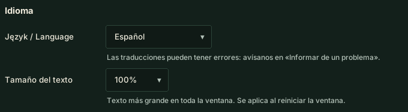
CORRECCIÓNComparación con un rival: claro con el nombre («García es más rápido en T5…»), en todos los idiomas, también sin clave Groq.
CORRECCIÓN«¿Dónde pierdo con García?» compara con el rival, no con tu propia vuelta.
CORRECCIÓN«¿Cómo vamos?» y «¿qué pasa?»: estado rápido en vez de quedarse sin respuesta.
CORRECCIÓN«Puedes hablar» / «sigue hablando» también termina el silencio tras «silencio».
CORRECCIÓNLa voz polaca pronuncia «spotter» correctamente.
CORRECCIÓNVentana: texto pequeño más grande, texto gris más nítido.
CORRECCIÓNVentana: el contenido de una pestaña aparece nada más abrirla.
CORRECCIÓNEl objetivo «Ritmo de carrera» aparece en la ventana como función experimental.
Novità
Modifiche nelle ultime versioni di Pit Wall Crew.
Versione 0.4.4.8 (15.11.2026)
CORREZIONEAssetto Corsa: la mappa del circuito torna a vedersi nel rapporto di guida.
Versione 0.4.4.7 (15.11.2026)
NUOVORapporto di guida, scheda «Carburante» / «Energia»: anche il massimo consumato in un giro (con l'energia, anche il carburante).

CORREZIONEBarra vuota sotto «Messaggi» al primo avvio di una nuova versione.
Versione 0.4.4.6 (15.11.2026)
CORREZIONELa finestra non si blocca più per un attimo durante il controllo degli aggiornamenti all'avvio.
CORREZIONEComandi della sosta: «pressione davanti, 2 giù» con la virgola, correggersi nella frase («no, sinistre») e «rifornisci a metà».
Versione 0.4.4.5 (15.11.2026)
NUOVOFinestra: bordi lisci e arrotondati per schede, pulsanti, etichette e interruttori.
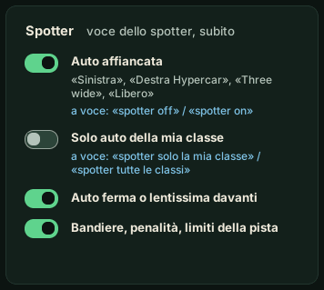
NUOVOVoce con emozione: buone notizie (giro migliore, posizione guadagnata, podio) più vivaci, messaggi urgenti più veloci e forti.
CORREZIONEFinestra: non si blocca più per un attimo all'avvio dell'ingegnere.
CORREZIONEReport di guida: anche le altre schede (gomme, energia, intestazioni, «Per il prossimo stint») disegnate come un unico elemento – il report è circa 3 volte più leggero.
Versione 0.4.4.4 (15.11.2026)
CORREZIONEFinestra: avvio più rapido – le pagine di aiuto vengono create solo alla prima apertura.
CORREZIONEReport di guida: elenco curve, «Migliora nella guida» e riquadri disegnati come un unico elemento – scorrimento, scelta del report e ridimensionamento più veloci.
Versione 0.4.4.3 (15.11.2026)
CORREZIONEFinestra: niente più scatti nei primi istanti dopo l’avvio – il report di guida viene creato solo quando apri la sua pagina o ci passi sopra nel menu.
Versione 0.4.4.2 (14.11.2026)
CORREZIONEFinestra: avvio più rapido – la finestra compare prima e non scatta più nei primi secondi.
CORREZIONERapporto di guida: scorrimento fluido, scelta del rapporto e ridimensionamento della finestra più rapidi.
CORREZIONEComandi in polacco: «Radio czek» funziona come «radio test».
CORREZIONEComandi in polacco: «Coś zmienić?» e «Masz jakieś rady?» – l'ingegnere dice cosa migliorare nella guida.
CORREZIONEComandi in polacco: «Pit menu, opony bez zmian» imposta una sosta senza cambio gomme.
Versione 0.4.4.1 (14.11.2026)
CORREZIONEFinestra: niente più salti al cambio di pagina o di dimensione – la pagina e il rapporto di guida compaiono già impaginati.
CORREZIONEPit Wall: pagina protetta – i dati del database della squadra e del link spettatore sono sempre mostrati come testo.
CORREZIONEPit Wall: dopo «Aggiorna» in «Giri», l'elenco di confronto mostra i giri nuovi.
CORREZIONEPit Wall: accedendo di nuovo alla stessa squadra torna la vista della squadra invece della schermata di accesso.
CORREZIONEPit Wall: il filtro sessione in «Giri» non mescola più i giri di due auto della squadra in pista insieme.
CORREZIONEPit Wall: «Piano rapido» mostra un messaggio con numeri errati invece di bloccare la pagina.
Versione 0.4.4.0 (13.11.2026)
NUOVOUn'uscita di pista conta solo se ha una conseguenza (penalità del gioco, tempo perso, urto); il rapporto di guida indica a parte i larghi senza penalità.
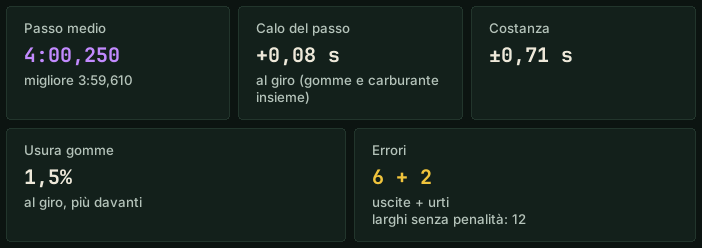
CORREZIONEIl consiglio gomme per la sosta non cambia più durante lo stint (diceva «quattro gomme» e, all'ingresso ai box, «niente gomme»).
CORREZIONEConsiglio pressioni per la sosta solo da pressioni stabilizzate; in Assetto Corsa in click del gioco.
CORREZIONE«Sveglia!» non arriva più dopo una sosta o un urto; «sei tornato in ritmo» solo quando il tuo passo è noto.
CORREZIONELe domande sono riconosciute per parole intere: niente più risposte sull'argomento sbagliato.
CORREZIONE«Cambiamo le gomme?» è una domanda, non un comando; «energia al pieno» imposta il menu box.
CORREZIONE«Passiamo alle gomme da pioggia?» riceve il consiglio sulla pioggia, non sull'usura delle gomme.
CORREZIONE«Faccio 15 giri col pieno?» conta anche l'energia virtuale.
CORREZIONERivali: distacco, passo e previsione di aggancio coincidono; nessun confronto con un giro di sosta.
CORREZIONEVelocità massima dei rivali solo da un giro completo.
CORREZIONEIl giro migliore è un tempo convalidato dal gioco: senza giri annullati per i limiti della pista (rapporto di guida e voce).
CORREZIONEIl rapporto di guida e il riepilogo della gara includono l'ultimo giro fino al traguardo.
CORREZIONERapporto di guida: nulla è tagliato, anche in una finestra stretta e con il ridimensionamento dello schermo; «Con energia piena … giri» corretto.
CORREZIONERapporto di guida: «ABS» e «TC» in maiuscolo (diceva «Abs per tutta la frenata»).
CORREZIONEDopo una domanda dell'ingegnere («Va bene?») non viene aggiunto altro.
CORREZIONEVoce polacca: frazioni corrette.
CORREZIONEUltimi giri di gara: risposte corrette su strategia, soste dei rivali, carburante fino al traguardo e danni.
CORREZIONE«Che tempo fa?»: «La pista si raffredda, circa 3 gradi all'ora» invece di «cambia di -3 gradi».
CORREZIONEIl consulente meteo consiglia il cambio gomme anche in una sessione bagnata fin dall'inizio.
CORREZIONENomi dei piloti sempre con la maiuscola.
CORREZIONEAltre lingue senza chiave Groq: messaggi su sosta, pioggia e stanchezza, consigli di assetto, note e tutto il rapporto di guida sono tradotti.
CORREZIONEAltre lingue senza chiave Groq: i comandi funzionano con qualsiasi nome di pilota.
CORREZIONEAltre lingue: note e commenti sull'auto salvati con le parole del pilota; un numero di curva non fa più perdere il resto della frase.
CORREZIONESpagnolo: il Pit Wall e la radio di squadra non tornano più al polacco.
CORREZIONEUnità °F, mph, psi e galloni: tutti i numeri della frase vengono convertiti (gomme, pressioni, velocità massima, carburante).
CORREZIONEDemo: funzionano «silenzio», «dov'è Rossi?» e «quali sono le mie note?»; i comandi a pagamento dicono che sono nella versione completa.
CORREZIONEDemo: le stelle nell'elenco dei comandi corrispondono a ciò che funziona; il rapporto di guida mostra la curva con la perdita maggiore.
CORREZIONEDemo: sulla pioggia solo i fatti; quando cambiare le gomme è nella versione completa.
CORREZIONEModalità Solo: il comando di notifica dice che funziona solo in squadra.
CORREZIONEChiudere la finestra subito dopo l'avvio non invia più un rapporto di crash.
CORREZIONEUna domanda con il nome dell'ingegnere («Che succede, Larry?») è capita come senza nome, in tutte le lingue.
CORREZIONEL'ingegnere risponde a un saluto («Ciao»).
CORREZIONEQuando Windows blocca una parte del programma («Smart App Control»), la finestra lo dice chiaramente e indica cosa fare.
Versione 0.4.3.44 (12.11.2026)
NUOVOGuida vocale ai comandi: «quali sono i comandi sui rivali?», «cosa posso chiedere sulle gomme?», «avanti».
NUOVORivale curva per curva senza nome: «dove perdo da quello davanti?», «dove è più veloce quello dietro?».
NUOVOImpostazioni → Audio e lingua: «Dimensione del testo» (100 / 110 / 125%) per tutta la finestra.
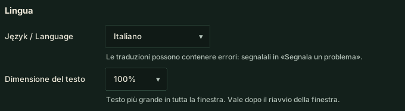
CORREZIONEConfronto con un rivale: chiaro con il nome («Rossi è più veloce in T5…»), in ogni lingua, anche senza chiave Groq.
CORREZIONE«Dove perdo da Rossi?» confronta con il rivale, non con il tuo giro.
CORREZIONE«Com'è la situazione?» e «che succede?»: stato rapido invece di nessuna risposta.
CORREZIONE«Puoi parlare» / «continua a parlare» termina anche il silenzio dopo «silenzio».
CORREZIONELa voce polacca pronuncia «spotter» correttamente.
CORREZIONEFinestra: testi piccoli più grandi, testi grigi più leggibili.
CORREZIONEFinestra: il contenuto di una scheda appare subito all'apertura.
CORREZIONEL'obiettivo «Passo gara» è indicato nella finestra come funzione sperimentale.
Nyheder
Ændringer i de seneste versioner af Pit Wall Crew.
Version 0.4.4.8 (15.11.2026)
RETTELSEAssetto Corsa: Banekortet i kørselsrapporten vises igen.
Version 0.4.4.7 (15.11.2026)
NYKørselsrapport, kortet »Brændstof« / »Energi«: også det højeste forbrug på én omgang (med energi også brændstof).

RETTELSETom bjælke under »Beskeder« ved første start af en ny version.
Version 0.4.4.6 (15.11.2026)
RETTELSEVinduet fryser ikke længere et øjeblik, mens der søges efter opdateringer ved start.
RETTELSEPitstop-kommandoer: »tryk foran, 2 ned« med komma, rettelse midt i sætningen (»nej, venstre«) og »tank halvt op«.
Version 0.4.4.5 (15.11.2026)
NYVindue: glatte, afrundede kanter på kort, knapper, mærker og kontakter.

NYStemme med følelse: gode nyheder (bedste omgang, vundet placering, podie) mere livlige, hastebeskeder hurtigere og højere.
RETTELSEVindue: fryser ikke længere et øjeblik, når ingeniøren starter.
RETTELSEKørselsrapport: de øvrige kort (dæk, energi, overskrifter, „Til næste stint“) tegnes også som ét element – rapporten er ca. 3 gange lettere.
Version 0.4.4.4 (15.11.2026)
RETTELSEVindue: hurtigere start – hjælpesiderne bygges først, når de åbnes første gang.
RETTELSEKørselsrapport: svingliste, „Forbedr i kørslen“ og felter tegnet som ét element – hurtigere rulning, valg af rapport og ændring af vinduesstørrelse.
Version 0.4.4.3 (15.11.2026)
RETTELSEVindue: ingen hak i de første øjeblikke efter start – kørselsrapporten bygges først, når du åbner dens side eller peger på den i menuen.
Version 0.4.4.2 (14.11.2026)
RETTELSEVindue: hurtigere start – vinduet vises tidligere og hakker ikke længere i de første sekunder.
RETTELSEKørerapport: jævn rulning, hurtigere valg af rapport og ændring af vinduets størrelse.
RETTELSEPolske kommandoer: »Radio czek« virker som »radio test«.
RETTELSEPolske kommandoer: »Coś zmienić?« og »Masz jakieś rady?« – ingeniøren siger, hvad du kan forbedre i kørslen.
RETTELSEPolske kommandoer: »Pit menu, opony bez zmian« indstiller et pitstop uden dækskift.
Version 0.4.4.1 (14.11.2026)
RETTELSEVindue: ingen hop ved sideskift eller ændring af størrelse – siden og kørerapporten vises færdigt opstillet.
RETTELSEPit Wall: siden er sikret – data fra teamets database og tilskuerlinket vises altid som tekst.
RETTELSEPit Wall: efter »Opdater« i »Omgange« viser sammenligningslisten nye omgange.
RETTELSEPit Wall: når du logger ind igen på samme team, vender teamvisningen tilbage i stedet for loginskærmen.
RETTELSEPit Wall: sessionsfilteret i »Omgange« blander ikke længere omgange fra to teambiler, der kører samtidig.
RETTELSEPit Wall: »Hurtig plan« viser en besked ved forkerte tal i stedet for at fryse siden.
Version 0.4.4.0 (13.11.2026)
NYEn udforkørsel tæller kun, når den har en konsekvens (spillets straf, tabt tid, sammenstød); for bredt uden straf vises for sig i kørerapporten.
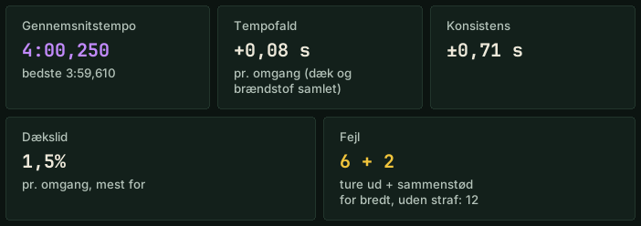
RETTELSEDækrådet til pitstoppet ændrer sig ikke længere i løbet af stintet (det sagde »fire dæk« og ved indkørslen »ingen dæk«).
RETTELSETrykråd til pitstoppet kun ud fra stabiliserede tryk; i Assetto Corsa i spillets klik.
RETTELSE»Vågn op!« kommer ikke længere efter et pitstop eller et sammenstød; »tilbage i rytmen« først, når dit tempo er kendt.
RETTELSESpørgsmål genkendes på hele ord – ikke flere svar om det forkerte emne.
RETTELSE»Skifter vi dæk?« er et spørgsmål, ikke en kommando; »fuld energi« indstiller pitmenuen.
RETTELSE»Skal vi skifte til regndæk?« får rådet om regn, ikke om dækslid.
RETTELSE»Kan jeg køre 15 omgange på fuld tank?« regner også med virtuel energi.
RETTELSERivaler: afstand, tempo og prognose passer sammen; ingen sammenligning med en pitstop-omgang.
RETTELSERivalernes topfart først fra en hel omgang.
RETTELSEDen bedste omgang er en tid, som spillet har godkendt – uden omgange slettet for banegrænser (kørerapport og stemme).
RETTELSEKørerapporten og løbsoversigten har den sidste omgang til mål med.
RETTELSEKørerapport: intet bliver skåret af, heller ikke i et smalt vindue eller med skærmskalering; korrekt »På fuld energi … omg.«.
RETTELSEKørerapport: »ABS« og »TC« med store bogstaver (der stod »Abs under hele opbremsningen«).
RETTELSEEfter ingeniørens spørgsmål (»OK?«) bliver der ikke tilføjet mere.
RETTELSEPolsk stemme: korrekte brøker.
RETTELSELøbets sidste omgange: korrekte svar om strategi, rivalernes pitstop, brændstof til mål og skader.
RETTELSE»Hvordan er vejret?«: »Banen køler af, cirka 3 grader i timen« i stedet for »ændrer sig med -3 grader«.
RETTELSEVejrrådgiveren anbefaler dækskift også i en session, der er våd fra starten.
RETTELSEKørernavne altid med stort begyndelsesbogstav.
RETTELSEAndre sprog uden Groq-nøgle: beskeder om pitstop, regn og træthed, opsætningsråd, noter og hele kørerapporten er oversat.
RETTELSEAndre sprog uden Groq-nøgle: kommandoer virker med ethvert kørernavn.
RETTELSEAndre sprog: noter og bemærkninger om bilen gemmes med kørerens egne ord; et svingnummer sluger ikke længere resten af sætningen.
RETTELSESpansk: Pit Wall og holdradioen falder ikke længere tilbage til polsk.
RETTELSEEnheder °F, mph, psi og gallon: alle tal i en sætning omregnes (dæk, tryk, topfart, brændstof).
RETTELSEDemo: »stille«, »hvor er Jensen?« og »hvad er mine noter?« virker; betalte kommandoer siger, at de er i den fulde version.
RETTELSEDemo: stjernerne på kommandolisten passer med det, der virker; kørerapporten viser svinget med det største tab.
RETTELSEDemo: kun fakta om regnen; hvornår der skal skiftes dæk, er i den fulde version.
RETTELSESolo-tilstand: notifikationskommandoen siger, at den kun virker i et hold.
RETTELSELukning af vinduet lige efter start sender ikke længere en nedbrudsrapport.
RETTELSEEt spørgsmål med ingeniørens navn (»Hvad sker der, Larry?«) forstås som uden navn, på alle sprog.
RETTELSEIngeniøren svarer på en hilsen (»Hej«).
RETTELSENår Windows blokerer en del af programmet (»Smart App Control«), siger vinduet det tydeligt og fortæller, hvad du skal gøre.
Version 0.4.3.44 (12.11.2026)
NYStemmeguide til kommandoer: »hvilke kommandoer er der om rivaler?«, »hvad kan jeg spørge om dæk?«, »videre«.
NYRival sving for sving uden navn: »hvor taber jeg til ham foran?«, »hvor er ham bagved hurtigere?«.
NYIndstillinger → Lyd og sprog: »Tekststørrelse« (100 / 110 / 125 %) for hele vinduet.
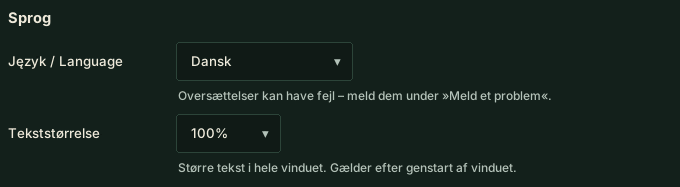
RETTELSESammenligning med en rival: tydeligt med navnet (»Jensen er hurtigere i T5…«), på alle sprog, også uden Groq-nøgle.
RETTELSE»Hvor taber jeg til Jensen?« sammenligner med rivalen, ikke med din egen omgang.
RETTELSE»Hvad er situationen?« og »hvad sker der?« – hurtig status i stedet for intet svar.
RETTELSE»Du må tale« / »bliv ved med at tale« afslutter også tavsheden efter »stille«.
RETTELSEDen polske stemme udtaler »spotter« korrekt.
RETTELSEVindue: lille tekst er større, grå tekst tydeligere.
RETTELSEVindue: en fanes indhold vises straks, når du åbner den.
RETTELSEMålet »Løbstempo« er markeret i vinduet som en eksperimentel funktion.